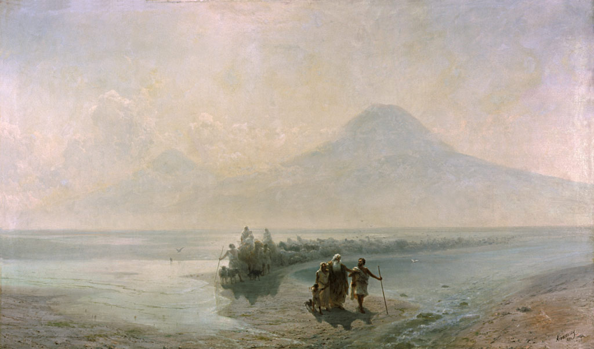

01
Le berceau d'Ararat
Le mont Ararat, où la tradition situe l'arche de Noé, domine l'imaginaire arménien. Première nation à adopter le christianisme comme religion d'État en 301, l'Arménie a forgé une identité indissociable de sa foi, de ses églises et de ses khatchkars — ces croix de pierre sculptées.
« Nous sommes nos montagnes. »